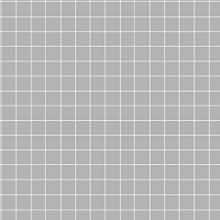
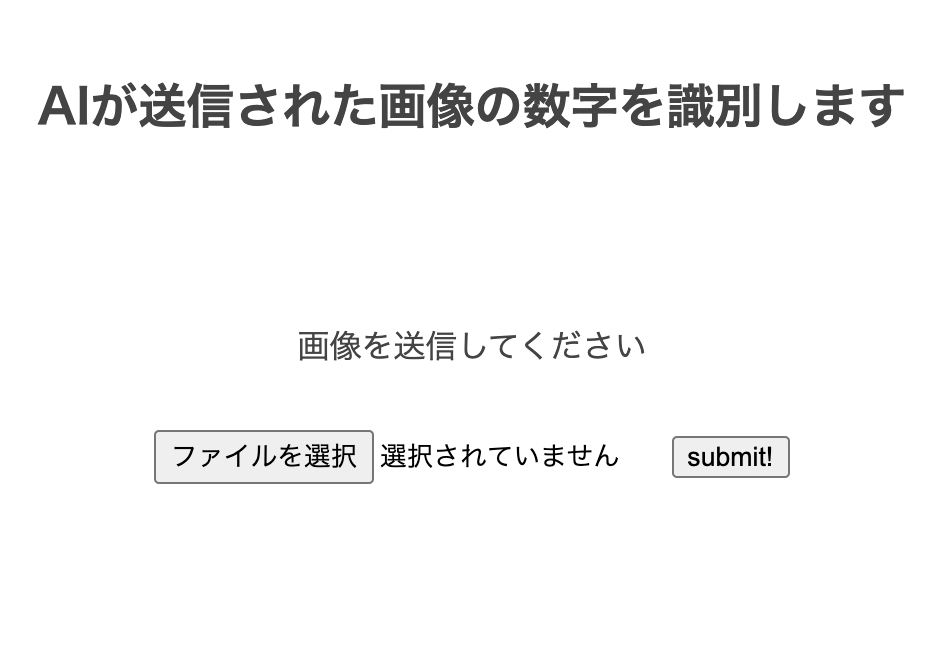

Wataru Nagasaka Portfolio
PROFILE
はじめまして。長坂 亘(ながさか わたる)と申します。2020年4月よりプログラミングの学習を始めました。
主な使用言語は、Pythonで機械学習を学んでいます。今後は、Docker等も扱えるようになりたいと考えています。
使用するプログラミング言語一覧


WORKS
Kaggleコンペ
タイタニック

住宅価格

レンタルバイク
１００本ノック
画像診断アプリ
女子プロゴルファー判定

手書き文字

タイタニック
取り組み理由
kaggleを始めるにあたり、タイタニックは、チュートリアルや解法が充実していると考えた。データ前処理からのモデル構築の習得を身に付けるために取り組んだ。
説明
データ前処理でグラフ化（視覚化）してデータを俯瞰してみる重要性を理解できた。カテゴリ値を数値データに変換、欠損値の処理も学ぶ。モデルの構築もグリッドサーチ、ランダムサーチを体験する。３週繰り返したとでデータ前処理のメソッドやモデル構築方法を理解できた。
住宅価格
取り組み理由
タイタニックで分類について学んだため、住宅価格について回帰を学ぶために取り組んだ。
説明
住宅価格を予測する。説明変数が多かったため面食らう。不明な説明変数はデータ前処理でかなり削りモデルを構築したがRMSE(二乗平均平方根誤差)が大きくなってしまった。そのためデータの型を数値変換したりと試行錯誤した。モデルはGBDT(勾配ブースティング木)をトライ。イメージはたくさんの専門家による意思決定で物凄い手法であると分かった。
レンタルバイク
取り組み理由
時系列データを扱っていたので時系列解析を身に付けるため
説明
レンタルバイクの需要予測。データ前処理ではseabornを使いグラフを見やすくした。時系列データを年-月-日と分割し、相関関係を見た。対数平均二乗誤差（RMSLE)を行うのにモデルから予測した値を０にするなど無理やり感があったのでスコアはあまり良くない
女子プロゴルファー判定
取り組み理由
父親が女子プロゴルファーが好きだが家族は顔を見ても名前がわからないため、顔判別できるアプリを作成した
説明
渋野選手、原選手、小祝選手の３名の顔判断ができるアプリケーションとなっている。顔部分の取得はface_recgnitionの技術を使っている。データ集め、そしてデータ前処理（ほとんどが画像が使えるか使えないかを１枚ずつ確認するのに時間を費やした）。モデルの作成は転移学習（VGG16）を用いた。自分の作ったモデルの精度より遥かに高い精度が出た
手書き文字
取り組み理由
アプリケーション作成の練習とherokuへのデプロイ
説明
手書き文字0~9の画像を判断する。Flaskを用いてアプリを作成。herokuへのデプロイやgitの使用方法についてもアプリ作成課程を通して学んだ
ブログ
データサイエンス100本ノック
取り組み理由
データ加工等の前処理方法を学ぶため
説明
データサイエンティスト教会から無料で出されている。kaggleを通してデータ前処理の重要性を感じたため取り組んでいる。解答の解説をQiitaの記事にアップしている。
資格一覧
- G検定 (11月取得計画)
- 統計検定２級 (9月中取得計画)
- Python 3 エンジニア認定データ分析試験 (9月中取得計画)